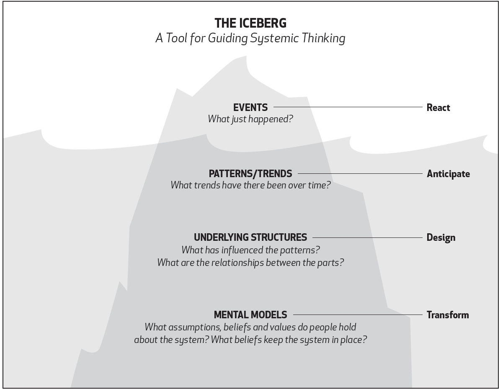
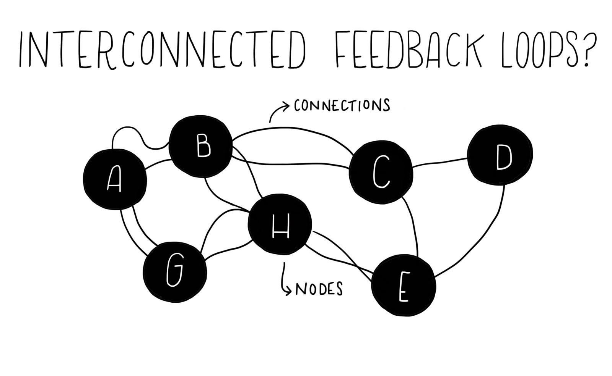
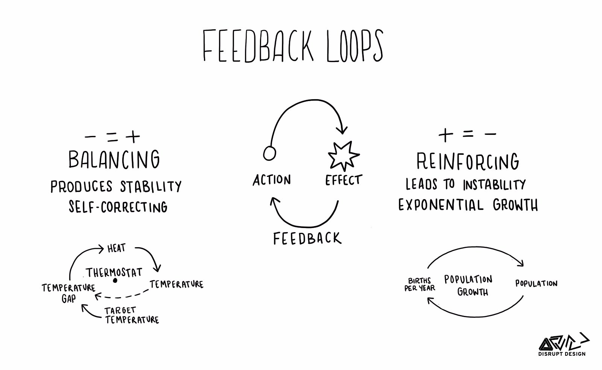
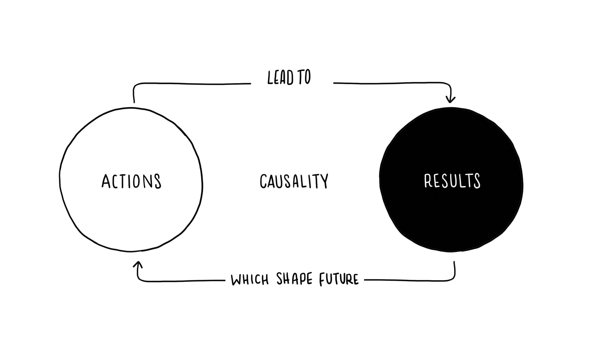

There are two underlying problems for program managers when considering any product development process, whether it is Agile, Waterfall, or a hybrid process.
- 1. The product development process is a subset of a larger product process (from product conception, to detailed business planning, all the way through end-of-life). However, while the product development process is usually well defined and defended, the overall product process is often ad-hoc, if it exists at all./li>
- 2. Because the product development process is owned by engineering, the program manager has limited influence over the outcomes. As most program managers are well aware, there are hundreds, if not thousands of micro-decisions affecting the product that take place daily in the product development process.
Agile methodologies attempt to address the second issue, and we can see this in scrum through the role of the product owner and the use of retrospectives.
But is there more that program managers can be doing to address these process issues? Yes, there is.
But as Einstein reminds us, the answers can’t be found at the same level of thinking that created the problem. We need to take a step back and look more holistically at the system.
“Because of feedback delays within complex systems, by the time a problem becomes apparent it may be unnecessarily difficult to solve. — A stitch in time saves nine.” ― Donella H. Meadows, Thinking in Systems: A Primer
What is Systems Thinking?
In Peter Senge’s highly influential book The Fifth Discipline, he describes systems thinking as “a way of thinking about, and a language for describing and understanding, the forces and interrelationships that shape the behavior of systems.” Which sounds very conceptual and is hard to wrap our heads around. He goes on to explain,
“Have you ever seen in a family, people producing consequences in the family, how people act, how people feel, that aren’t what anybody intends?’ Yes. ‘How does that happen?’ Well… then people tell their stories and think about it. But that then grounds people in not the jargon of ‘system’ or ‘systems thinking’ but the reality – that we live in webs of interdependence.”
Have you ever seen the product process, with its subset the product development process, produce unintended consequences? Produce defects, clash of egos/prioritizations, tradeoffs, compromises, or even end resulting products that were unintended?
Taking a high-level, interconnected system view of the product process can lead to new ways of understanding how products get defined, built, communicated, and maintained. And as a program manager, our role sits directly at the hub of the entire system, there is no one better placed or more directly responsible for understanding and guiding the system, than us.
Below are a few questions to help determine if you are likely to hit your schedule, or if you’re headed down a painful road of delays and setbacks:
The Iceberg Model
The Iceberg Model, formulated by M. Goodman in 2002, is a direct and practical way to utilize systems thinking.
It states that in many (if not most) cases only a very small amount (the ‘tip’) of information is available or known about a situation or phenomenon, whereas the ‘real’ information or bulk of data is either unavailable or hidden. The principle gets its name from the fact that only about 2/10th of an iceberg’s mass is seen outside while about 8/10th of it is unseen, deep down in the water.
Systems Thinking in Six Steps
In their paper Six Steps to Thinking Systemically, Michael Goodman and Richard Karash introduced six steps to apply systems thinking principles while solving complex problems. These steps were part of their case study to Bijou Bottling company’s problem of getting their orders shipped on time.
Step 1: Tell the Story
The first step in solving the problem is to understand it, and this can be achieved through looking deeply at the whole system rather than individual parts. This step requires meeting with the stakeholders to share their vision about the situation. One of the common tools to build this understanding is to utilize Concept Maps, which are graphical tools used to represent the organization or a structure of knowledge. Concept Maps visually present the system’s elements, concept links, proposition statements, cross-links, and examples.
Step 2: Draw Behavior Over Time (BOT) Graphs
When thinking about a problem, we are influenced with the current situation that is reflected in our analysis, yet the problem follows a time dimension, which means that it should be tracked through the time. The Behavior Over Time graph draws a curve that presents a specific behavior (Y) through the time (X). This graph helps us to understanding whether or not the current solution is effective.
Step 3: Create a Focusing Statement
At this point, there should be a clear vision about the problem solving process, which is defined in the from of a statement that indicates the team’s target and why the problem occurs.
Step 4: Identify the Structure
After having clear vision about the problem through the proposed statement, the system structure should be described, including the behavior patterns. Building these patterns helps in understanding more about the problem, and it can be formed as a system archetype.
Step 5: Going Deeper into the Issues
After defining the problem and the system structure, this step tends to understand the underlying problems through clarifying four items: the purpose of the system (what we want), the mental models, the large system, and personal role in the situation.
Set 6: Plan an Intervention
The previously collected information is used to start the intervention phase, where modifications to the current problem relate parts to connections. This intervention attempts to reach the desirable behavior.
Part of a Cycle
Even as systems thinkers, it is easy to fall back into a linear process. But learning is a cycle—not a once-through process with a beginning and an end. Once you have designed and tested an intervention, it is time to shift into the active side of the learning cycle. This process includes taking action, seeing the results, and then coming back to examine the outcomes from a systemic perspective.
1 Comments